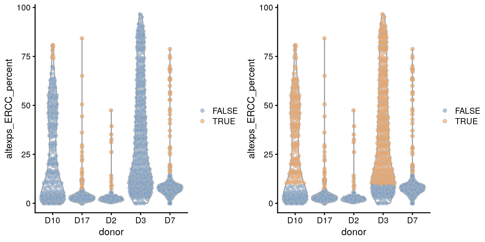
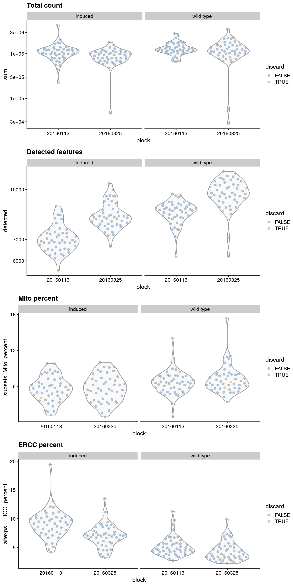
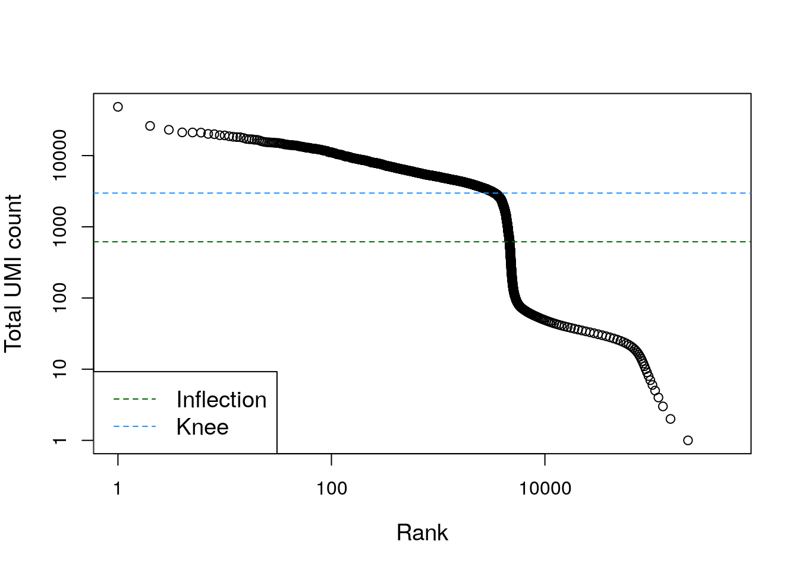

动机
scRNA-seq数据的低质量文库可能来自于：细胞分选环节的破坏、文库制备失误（没有足够的反转录或PCR次数）… 表现在：细胞总表达量低、基本没有表达的基因、高线粒体或spike-in占比。
这些低质量的库是有问题的，因为它们可能在下游分析中导致误导的结果 。
- 聚类问题： 低质量的细胞会聚集成一群，对结果的解释造成干扰，因为从这群细胞中得不到什么有用的信息，但是它的确也是一群。这种现象产生的原因有可能是：细胞破坏以后，线粒体或核RNAs占比升高。 最差的情况就是：不同类型的低质量细胞，也能聚在一起，因为相比于固有的生物差异，更相似的低质量让它们相依相偎。除此以外，本来非常小的细胞文库也能聚成一群，因为log转换后它们的平均表达量会发生很大的变化(A. Lun 2018).
- 方差估计或主成分分析:首先在PCA分析时，低质量和高质量之间的差异相比于生物学差异会体现更明显，占据主要的成分，减少降维结果的可靠性。另外，某个基因可能在两个细胞之间没什么表达差异，但是如果所处环境差异很大（一个细胞质量很低，另一个细胞质量正常），那么在差异估算过程中，就会把这个差异也会被当成差异表达基因。例如：一个低质量细胞文库的总表达量非常低（接近0），但恰巧还存在一个基因有表达量，那么这个基因的表达量在后续的文库归一化过程中就会尤为突出
- 奇怪的转录本上调：实验难免会混入外源的污染转录本，但这个量很少并且在所有细胞中都应该是差不多水平的。但如果某个细胞质量低，文库小，那么在校正文库差异过程中，其中的污染转录本表达量就会“突飞猛进”，看起来是一些明显上调的“奇怪基因”。实际上，这些奇怪的基因依然在其他细胞中存在，并且真实的表达量差不多，并且是不应该占据主体地位的。
为了最大程度避免上面一种或多种情况的发生，应该在归一化之前去掉这些低质量的细胞，这个过程就是**细胞的质控 **
使用A. T. L. Lun et al. (2017)的小型scRNA数据（未进行QC）进行测试
#--- loading ---#
library(scRNAseq)
sce.416b <- LunSpikeInData(which="416b")
table(sce.416b$block)
20160113 20160325
96 96
sce.416b$block <- factor(sce.416b$block)
sce.416b
## class: SingleCellExperiment
## dim: 46604 192
## metadata(0):
## assays(1): counts
## rownames(46604): ENSMUSG00000102693 ENSMUSG00000064842 ...
## ENSMUSG00000095742 CBFB-MYH11-mcherry
## rowData names(1): Length
## colnames(192): SLX-9555.N701_S502.C89V9ANXX.s_1.r_1
## SLX-9555.N701_S503.C89V9ANXX.s_1.r_1 ...
## SLX-11312.N712_S508.H5H5YBBXX.s_8.r_1
## SLX-11312.N712_S517.H5H5YBBXX.s_8.r_1
## colData names(9): Source Name cell line ... spike-in addition block
## reducedDimNames(0):
## altExpNames(2): ERCC SIRV
QC指标的选择
鉴定细胞是否是低质量的，需要用到几个指标。虽然下面这些指标是使用SMART-seq2数据进行展示的，但依然适用于UMI数据（比如MARS-seq、droplet-based技术）
- 文库大小（library size） ：指的是每个细胞中所有基因的表达量之和。细胞的文库如果很小，说明在文库制备过程中存在RNA的损失，要么是由于细胞裂解，要么是cDNA捕获不足导致后续的扩增量少
- 每个细胞中表达基因的数目（number of expressed features in each cell）：指的是细胞中非0表达量的基因数量。如果细胞中基本没有基因表达，很可能是转录本捕获失败
- 比对到spike-in转录本的reads比例（proportion of reads mapped to spike-in transcripts）：计算方法是：
spike-in counts / all features (including spike-ins) for each cell。每个细胞都应该加入等量的外源转录本（spike-in），如果哪个细胞的spike-in比例提高了，说明它的内源RNA含量减少（比如在细胞分选阶段出现的细胞裂解或者RNA降解） - 比对到线粒体基因组的reads比例（proportion of reads mapped to genes in the mitochondrial genome） ：如果没有spike-in，那么使用线粒体指标也是能说明问题的(Islam et al. 2014; Ilicic et al. 2016)。比对到线粒体的reads增多，说明细胞质中的RNA减少，可能存在细胞穿孔的情况，而这个孔的大小，可能只是将细胞质中存在的mRNA流出去，但线粒体的体积超过了孔的大小，所以还留在了细胞中，造成一定程度的富集，导致线粒体RNA占比升高。
对于每个细胞，可以用scater包的perCellQCMetrics()函数进行计算，其中sum这一列表示每个细胞的文库大小；detected这一列表示检测到的基因数量；subsets_Mito_percent这一列表示比对到线粒体基因组的reads占比；altexps_ERCC_percent表示比对到ERCC spike-in的reads占比
# Retrieving the mitochondrial transcripts using genomic locations included in
# the row-level annotation for the SingleCellExperiment.
location <- rowRanges(sce.416b)
is.mito <- any(seqnames(location)=="MT")
# ALTERNATIVELY: using resources in AnnotationHub to retrieve chromosomal
# locations given the Ensembl IDs; this should yield the same result.
library(AnnotationHub)
ens.mm.v97 <- AnnotationHub()[["AH73905"]]
chr.loc <- mapIds(ens.mm.v97, keys=rownames(sce.416b),
keytype="GENEID", column="SEQNAME")
is.mito.alt <- which(chr.loc=="MT")
library(scater)
df <- perCellQCMetrics(sce.416b, subsets=list(Mito=is.mito))
df
## DataFrame with 192 rows and 16 columns
## sum detected percent_top_50 percent_top_100 percent_top_200
## <integer> <integer> <numeric> <numeric> <numeric>
## 1 865936 7618 26.7218 32.2773 39.7208
## 2 1076277 7521 29.4043 35.0354 42.2581
## 3 1180138 8306 27.3454 32.4770 39.3296
## 4 1342593 8143 35.8092 40.2666 46.2460
## 5 1668311 7154 34.1198 39.0901 45.6660
## ... ... ... ... ... ...
## 188 776622 8174 45.9362 49.7010 54.6101
## 189 1299950 8956 38.0829 42.8930 49.0622
## 190 1800696 9530 30.6675 35.5839 41.8550
## 191 46731 6649 32.2998 37.9149 44.5999
## 192 1866692 10964 26.6632 31.2584 37.5608
## percent_top_500 subsets_Mito_sum subsets_Mito_detected subsets_Mito_percent
## <numeric> <integer> <integer> <numeric>
## 1 52.9038 78790 20 9.09882
## 2 55.7454 98613 20 9.16242
## 3 51.9337 100341 19 8.50248
## 4 57.1210 104882 20 7.81190
## 5 58.2004 129559 22 7.76588
## ... ... ... ... ...
## 188 64.4249 48126 20 6.19684
## 189 60.6675 112225 25 8.63302
## 190 53.6781 135693 23 7.53559
## 191 56.5235 3505 16 7.50037
## 192 48.9489 150375 29 8.05569
## altexps_ERCC_sum altexps_ERCC_detected altexps_ERCC_percent
## <integer> <integer> <numeric>
## 1 65278 39 6.80658
## 2 74748 40 6.28030
## 3 60878 42 4.78949
## 4 60073 42 4.18567
## 5 136810 44 7.28887
## ... ... ... ...
## 188 61575 39 7.17620
## 189 94982 41 6.65764
## 190 113707 40 5.81467
## 191 7580 44 13.48898
## 192 48664 39 2.51930
## altexps_SIRV_sum altexps_SIRV_detected altexps_SIRV_percent total
## <integer> <integer> <numeric> <integer>
## 1 27828 7 2.90165 959042
## 2 39173 7 3.29130 1190198
## 3 30058 7 2.36477 1271074
## 4 32542 7 2.26741 1435208
## 5 71850 7 3.82798 1876971
## ... ... ... ... ...
## 188 19848 7 2.313165 858045
## 189 31729 7 2.224004 1426661
## 190 41116 7 2.102562 1955519
## 191 1883 7 3.350892 56194
## 192 16289 7 0.843271 1931645
另外，还可以使用addPerCellQC()，它会把每个细胞的QC指标加到SingleCellExperiment对象的colData中，方便后面调取
sce.416b <- addPerCellQC(sce.416b, subsets=list(Mito=is.mito))
colnames(colData(sce.416b))
## [1] "Source Name" "cell line"
## [3] "cell type" "single cell well quality"
## [5] "genotype" "phenotype"
## [7] "strain" "spike-in addition"
## [9] "block" "sum"
## [11] "detected" "percent_top_50"
## [13] "percent_top_100" "percent_top_200"
## [15] "percent_top_500" "subsets_Mito_sum"
## [17] "subsets_Mito_detected" "subsets_Mito_percent"
## [19] "altexps_ERCC_sum" "altexps_ERCC_detected"
## [21] "altexps_ERCC_percent" "altexps_SIRV_sum"
## [23] "altexps_SIRV_detected" "altexps_SIRV_percent"
## [25] "total"
当然，这里做QC统计的前提假设是：每个细胞的qc指标都是独立于生物学状态的。也就是说，qc指标不会那么智能地识别细胞类型然后进行判断。它会认为（如文库太小、高线粒体占比）都是由技术误差引起的，而非生物因素。但是有一个问题，如果某些细胞类型本身的RNA含量就很低，或者它们本来就含有很多的线粒体转录本呢？再根据这个指标进行过滤，会不会损失一些细胞类型呢？
识别低质量细胞
1. 使用固定的阈值
识别低质量细胞最简单方法是在QC度量上应用阈值。例如设定文库低于10万reads的细胞是低质量的，或者表达基因数量少于5000个，spike-in或线粒体占比高于10%。
qc.lib <- df$sum < 1e5
qc.nexprs <- df$detected < 5e3
qc.spike <- df$altexps_ERCC_percent > 10
qc.mito <- df$subsets_Mito_percent > 10
discard <- qc.lib | qc.nexprs | qc.spike | qc.mito
# Summarize the number of cells removed for each reason.
DataFrame(LibSize=sum(qc.lib), NExprs=sum(qc.nexprs),
SpikeProp=sum(qc.spike), MitoProp=sum(qc.mito), Total=sum(discard))
## DataFrame with 1 row and 5 columns
## LibSize NExprs SpikeProp MitoProp Total
## <integer> <integer> <integer> <integer> <integer>
## 1 3 0 19 14 33
虽然看起来简单，但使用这种方法需要丰富的经验，了解实验设计和细胞状态；另外即使使用同一种文库制备方法，但由于细胞捕获效率和测序深度的不同，这个阈值依然需要适时调整。因此对于研究人员要求很高。
2. 使用相对阈值
鉴定离群点
为了获得相对阈值，先假设大部分细胞都是高质量的，然后去找离群点作为低质量。那么按照什么方法找离群点呢？常用的一个函数isOutlier使用的是MAD指标（绝对中位差来估计方差,先计算出数据与它们的中位数之间的偏差，然后这些偏差的绝对值的中位数就是MAD，median absolute deviation）。如果超过中位数3倍MAD的值就是离群值。
使用isOutlier时，如果要相减（例如：df$sum - 3* MAD），就用type="lower"，此时一般还要做个log转换log=TRUE ，保证得到的结果不是负数
qc.lib2 <- isOutlier(df$sum, log=TRUE, type="lower")
qc.nexprs2 <- isOutlier(df$detected, log=TRUE, type="lower")
qc.spike2 <- isOutlier(df$altexps_ERCC_percent, type="higher")
qc.mito2 <- isOutlier(df$subsets_Mito_percent, type="higher")
attr(qc.lib2, "thresholds")
lower higher
434082.9 Inf
attr(qc.nexprs2, "thresholds")
lower higher
5231.468 Inf
attr(qc.spike2, "thresholds")
lower higher
-Inf 14.15371
attr(qc.mito2, "thresholds")
lower higher
-Inf 11.91734
用相对阈值过滤的细胞数量统计：
discard2 <- qc.lib2 | qc.nexprs2 | qc.spike2 | qc.mito2
# Summarize the number of cells removed for each reason.
DataFrame(LibSize=sum(qc.lib2), NExprs=sum(qc.nexprs2),
SpikeProp=sum(qc.spike2), MitoProp=sum(qc.mito2), Total=sum(discard2))
## DataFrame with 1 row and 5 columns
## LibSize NExprs SpikeProp MitoProp Total
## <integer> <integer> <integer> <integer> <integer>
## 1 4 0 1 2 6
除此以外，还有一种更快的计算方法，一步整合了上面的操作：
reasons <- quickPerCellQC(df, percent_subsets=c("subsets_Mito_percent",
"altexps_ERCC_percent"))
colSums(as.matrix(reasons))
## low_lib_size low_n_features high_subsets_Mito_percent
## 4 0 2
## high_altexps_ERCC_percent discard
## 1 6
使用”相对“的阈值一个好处就是可以根据测序深度、cDNA捕获效率、线粒体含量等等进行阈值的调整，在经验不是足够丰富的时候，可以辅助判断。但仍需要注意的是，使用相对阈值是有前提的，那就是：认为大部分细胞都是高质量的
离群点检测的假设
- 离群点的检测的假设是大部分细胞的质量都不错。这一点假设可以通过实验去验证（比如肉眼检查细胞完整性）。但当大部分细胞质量都很低，使用相对阈值结果就对大量的低质量细胞无计可施。因为它使用了MAD值，和中位数有关系，那么可以试想：如果一堆数都不合格，那么它们的中位数也不合格，因此原来正确的值，其实在这群不合格的数值中，就是“离群”的。
- 另一个假设就是：每个细胞的qc指标都是独立于生物学状态的。也就是说，qc指标不会那么智能地识别细胞类型然后进行判断。在异质性很高的组织中， 就是存在内源RNA含量低，而线粒体基因占比高的细胞。如果使用”一刀切“的固定阈值，它们就很可能会被当成离群点被过滤。而是用MAD计算方法检测的结果可能就是：虽然一堆细胞的某个qc指标差异很大，但中位数也在变，随之变化的还有MAD值，这样最后的结果不至于和真实生物学情况差太多
考虑实验的因素
很多大型的实验都包含多个细胞系，而且可能采用的实验方法不同（比如选用不同的测序深度），这就产生了实验的不同批次。这种情况下， 应该对每个批次分别进行检测。
如果每个批次都是一个SingleCellExperiment对象，那么isOutlier()函数可以按上面的方法直接使用；但是如果不同批次的细胞已经混合成一整个SingleCellExperiment对象，那么batch=这个参数就派上用场了。
同样以这个416B数据集为例，他包含了两种不同的实验类型。然后我们就可以使用batch=参数去进行质控。
batch <- paste0(sce.416b$phenotype, "-", sce.416b$Plate)
batch.reasons <- quickPerCellQC(df, percent_subsets=c("subsets_Mito_percent",
"altexps_ERCC_percent"), batch=batch)
colSums(as.matrix(batch.reasons))
## low_lib_size low_n_features high_subsets_Mito_percent
## 4 2 2
## high_altexps_ERCC_percent discard
## 4 7
但是，batch参数不是万能的，之前也说过，这种相对阈值需要一个假设：每个批次的大部分细胞都是高质量的。当某个批次的细胞整体质量偏低，离群点检测很有可能失败
例如，在Grun et al. (2016)的数据集中有两个donor的实验是失败的。它们的ERCC含量相对其他批次高，增加了中位数和MAD值，导致过滤低质量细胞失败。因此这种情况下，可以先算其他几个批次的中位数和MAD值，然后参考这些值去对有问题的批次进行过滤。
library(scRNAseq)
sce.grun <- GrunPancreasData()
sce.grun <- addPerCellQC(sce.grun)
# First attempt with batch-specific thresholds.
discard.ercc <- isOutlier(sce.grun$altexps_ERCC_percent,
type="higher", batch=sce.grun$donor)
with.blocking <- plotColData(sce.grun, x="donor", y="altexps_ERCC_percent",
colour_by=I(discard.ercc))
# Second attempt, sharing information across batches
# to avoid dramatically different thresholds for unusual batches.
discard.ercc2 <- isOutlier(sce.grun$altexps_ERCC_percent,
type="higher", batch=sce.grun$donor,
subset=sce.grun$donor %in% c("D17", "D2", "D7"))
without.blocking <- plotColData(sce.grun, x="donor", y="altexps_ERCC_percent",
colour_by=I(discard.ercc2))
gridExtra::grid.arrange(with.blocking, without.blocking, ncol=2)

注：可以看到，左图是按照每个批次分别鉴定的离群点；右图是用质量好的批次计算的阈值，然后运用到差的批次上的结果
为了鉴别有问题的批次，可以先将每个批次分别计算结果，然后比较它们的阈值，如果比同类批次超出太多，就要警觉。
ercc.thresholds <- attr(discard.ercc, "thresholds")["higher",]
ercc.thresholds
## D10 D17 D2 D3 D7
## 73.610696 7.599947 6.010975 113.105828 15.216956
names(ercc.thresholds)[isOutlier(ercc.thresholds, type="higher")]
## [1] "D10" "D3"
可以看到D10、D3的阈值就超过其他批次很多
但是这么做的前提都是：我们认为批次中的细胞质量整体还不错。如果我们保证不了细胞质量，那么这种计算相对阈值的方法就不成立，还是要使用绝对阈值，手动去除。
3. 其他方法
另一个策略是根据每个细胞的QC指标来在高维空间中识别异常值。利用robustbase 包，将细胞放在高维空间，根据他们的QC指标（文库大小、表达基因数、spike-in比例、线粒体比例），然后使用isOutlier()来识别表现出异常高outlylier水平的低质量细胞
stats <- cbind(log10(df$sum), log10(df$detected),
df$subsets_Mito_percent, df$altexps_ERCC_percent)
library(robustbase)
outlying <- adjOutlyingness(stats, only.outlyingness = TRUE)
multi.outlier <- isOutlier(outlying, type = "higher")
summary(multi.outlier)
## Mode FALSE TRUE
## logical 182 10
除此以外，有时还可以根据基因表达量进行过滤，不过在bulk转录组中用的比较多，但是在scRNA中这样操作可能会损失一些本身数量就比较少的高质量细胞群体（比如一些罕见细胞，本身基因表达量就不是很高）
画图检查
检查QC度量的分布以确定可能的问题是一个很好的实践。在最理想的情况下，我们会看到正态分布，可以证明在离群值检测中使用的3 MAD阈值是合理的。另一种模式下的大量细胞表明QC指标可能与某些生物状态相关，可能导致过滤过程中不同细胞类型的丢失;或者有不一致的库准备为一个子集的细胞，一个非罕见的现象在板的协议。
# 把QC指标和原来的sce.416b细胞信息整合起来
colData(sce.416b) <- cbind(colData(sce.416b), df)
# 修改一下整合后的信息
sce.416b$block <- factor(sce.416b$block)
sce.416b$phenotype <- ifelse(grepl("induced", sce.416b$phenotype),
"induced", "wild type")
sce.416b$discard <- reasons$discard
# 绘图
gridExtra::grid.arrange(
plotColData(sce.416b, x="block", y="sum", colour_by="discard",
other_fields="phenotype") + facet_wrap(~phenotype) +
scale_y_log10() + ggtitle("Total count"),
plotColData(sce.416b, x="block", y="detected", colour_by="discard",
other_fields="phenotype") + facet_wrap(~phenotype) +
scale_y_log10() + ggtitle("Detected features"),
plotColData(sce.416b, x="block", y="subsets_Mito_percent",
colour_by="discard", other_fields="phenotype") +
facet_wrap(~phenotype) + ggtitle("Mito percent"),
plotColData(sce.416b, x="block", y="altexps_ERCC_percent",
colour_by="discard", other_fields="phenotype") +
facet_wrap(~phenotype) + ggtitle("ERCC percent"),
ncol=1
)

展示的是不同批次的QC指标
另一种有用的诊断方法是绘制相对于其他QC指标的线粒体计数比例图。
为了确保不存在这样的细胞：虽然细胞文库大，但它的线粒体占比也高。另外也是为了避免意外过滤掉本来是高质量但同时具有高代谢活性（即高线粒体占比）的细胞（如肝脏细胞）
======未完
针对Droplet数据的细胞判断
背景
由于这种建库方法的独特性，我们没办法事先知道某一个细胞文库（比如一个cell barcode）是真正包含一个细胞还是只是一个空的液滴（droplet）。因此，第一步是需要根据得到的表达量信息，来推断液滴是不是空的。但仅仅根据表达量判断还是不太靠谱，因为还有可能在空的液滴中依然包含外源RNA，最后的细胞文库依旧不为0，但确实不包含细胞。
这里为了说明这个问题，使用了一个未过滤的10X PBMC数据
# 数据下载
library(BiocFileCache)
bfc <- BiocFileCache("raw_data", ask = FALSE)
raw.path <- bfcrpath(bfc, file.path("http://cf.10xgenomics.com/samples",
"cell-exp/2.1.0/pbmc4k/pbmc4k_raw_gene_bc_matrices.tar.gz"))
# 解压数据
untar(raw.path, exdir=file.path(tempdir(), "pbmc4k"))
library(DropletUtils)
library(Matrix)
fname <- file.path(tempdir(), "pbmc4k/raw_gene_bc_matrices/GRCh38")
sce.pbmc <- read10xCounts(fname, col.names=TRUE)
sce.pbmc
## class: SingleCellExperiment
## dim: 33694 737280
## metadata(1): Samples
## assays(1): counts
## rownames(33694): ENSG00000243485 ENSG00000237613 ... ENSG00000277475
## ENSG00000268674
## rowData names(2): ID Symbol
## colnames(737280): AAACCTGAGAAACCAT-1 AAACCTGAGAAACCGC-1 ...
## TTTGTCATCTTTAGTC-1 TTTGTCATCTTTCCTC-1
## colData names(2): Sample Barcode
## reducedDimNames(0):
## altExpNames(0):
整体观察不同的barcodes（不一定都是真的细胞）的文库大小分布：
bcrank <- barcodeRanks(counts(sce.pbmc))
# Only showing unique points for plotting speed.
uniq <- !duplicated(bcrank$rank)
plot(bcrank$rank[uniq], bcrank$total[uniq], log="xy",
xlab="Rank", ylab="Total UMI count", cex.lab=1.2)
abline(h=metadata(bcrank)$inflection, col="darkgreen", lty=2)
abline(h=metadata(bcrank)$knee, col="dodgerblue", lty=2)
legend("bottomleft", legend=c("Inflection", "Knee"),
col=c("darkgreen", "dodgerblue"), lty=2, cex=1.2)

看到各个barcodes的文库大小有高有低，并且相差较大，因此可能对应着真实存在的细胞和空液滴。当然最简单的办法还是”一刀切“，留下那些文库较大的细胞，不过还是有损失真实细胞类型的风险
检测空的液滴
我们使用emptyDrops()函数，检查每个barcode的表达量是不是和外源RNA的表达量有显著差异(Lun et al. 2019)。如果存在显著差异，就说明barcode中更有可能是一个细胞。这种方法可以帮助区分：测序质量好的空液滴 和 包含细胞但RNA含量较少的液滴。尽管它们总体的表达量可能很相似，但本质不同，还是要区分的。
emptyDrops() 使用Monte Carlo统计模拟计算p值，如果要重复结果，需要设置随机种子。另外设置 false discovery rate (FDR)为0.1%，意味着不超过0.1%的barcodes是空的。